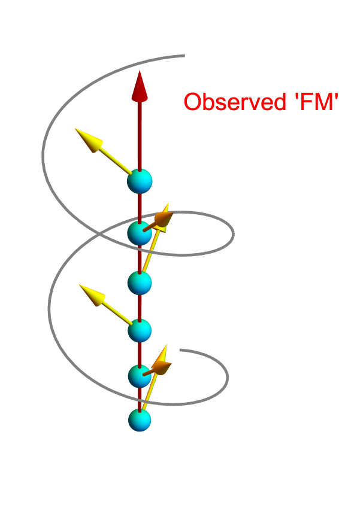
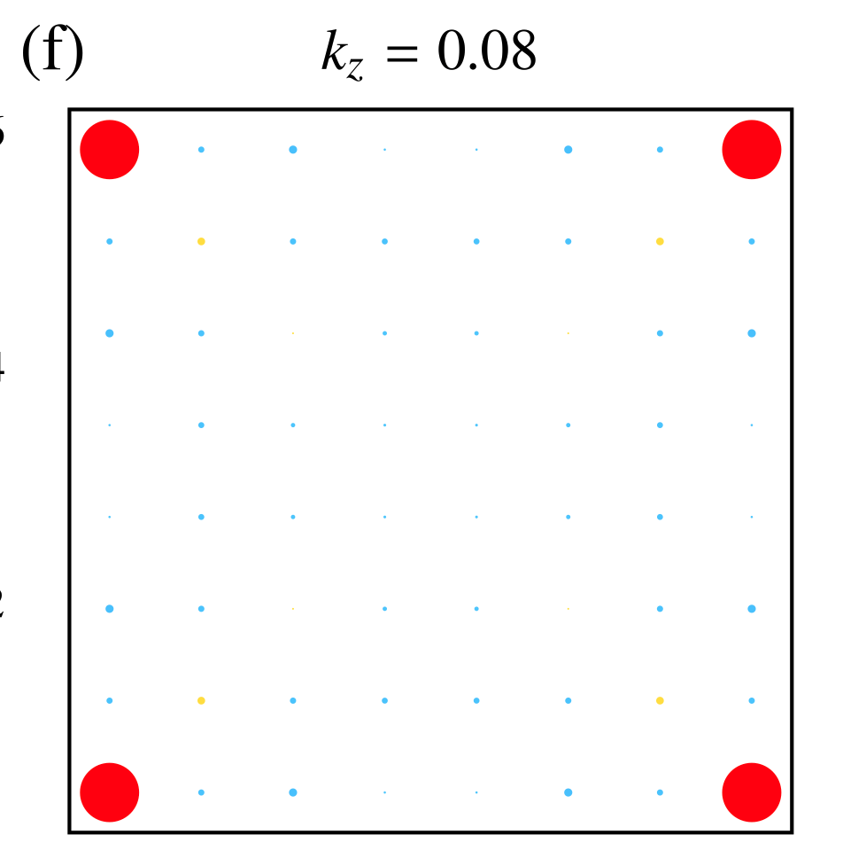
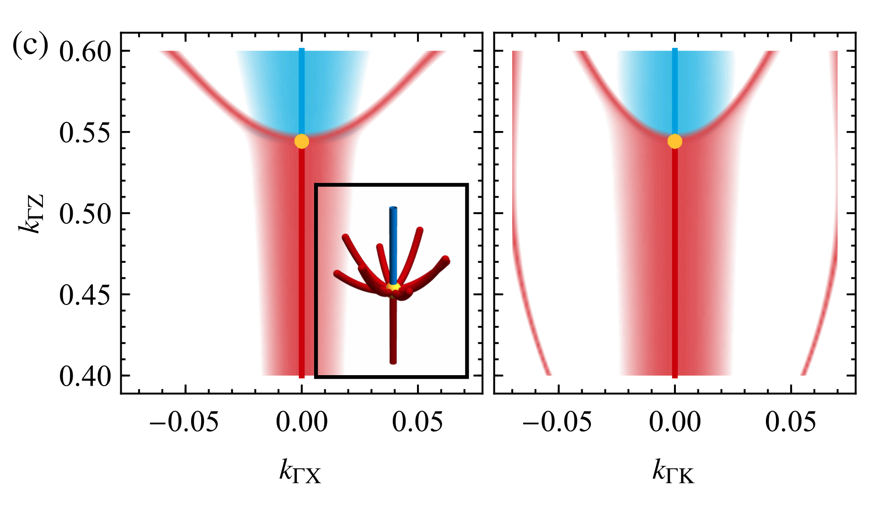
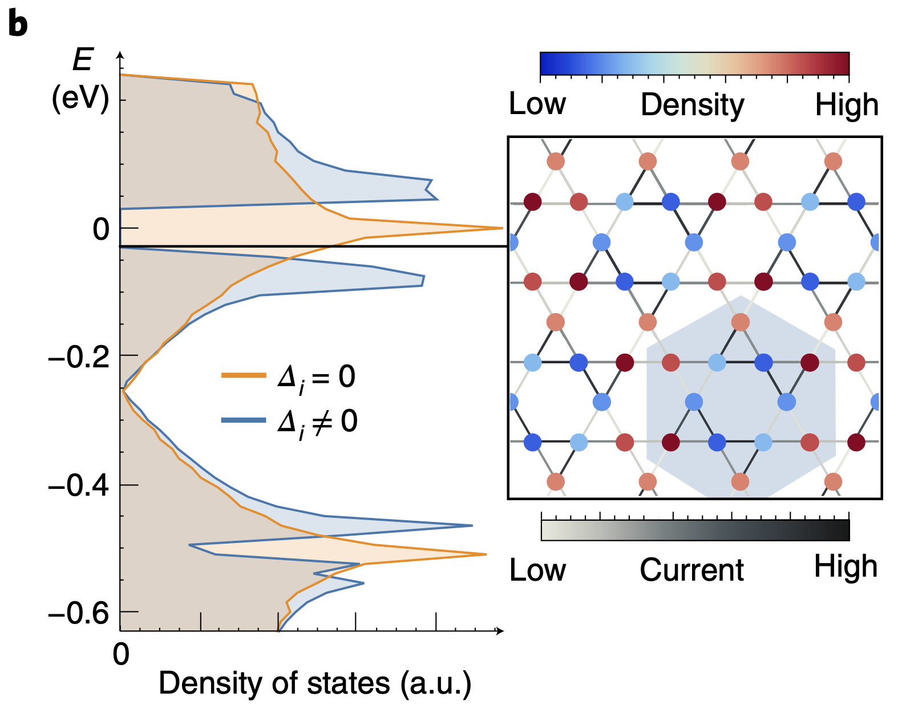
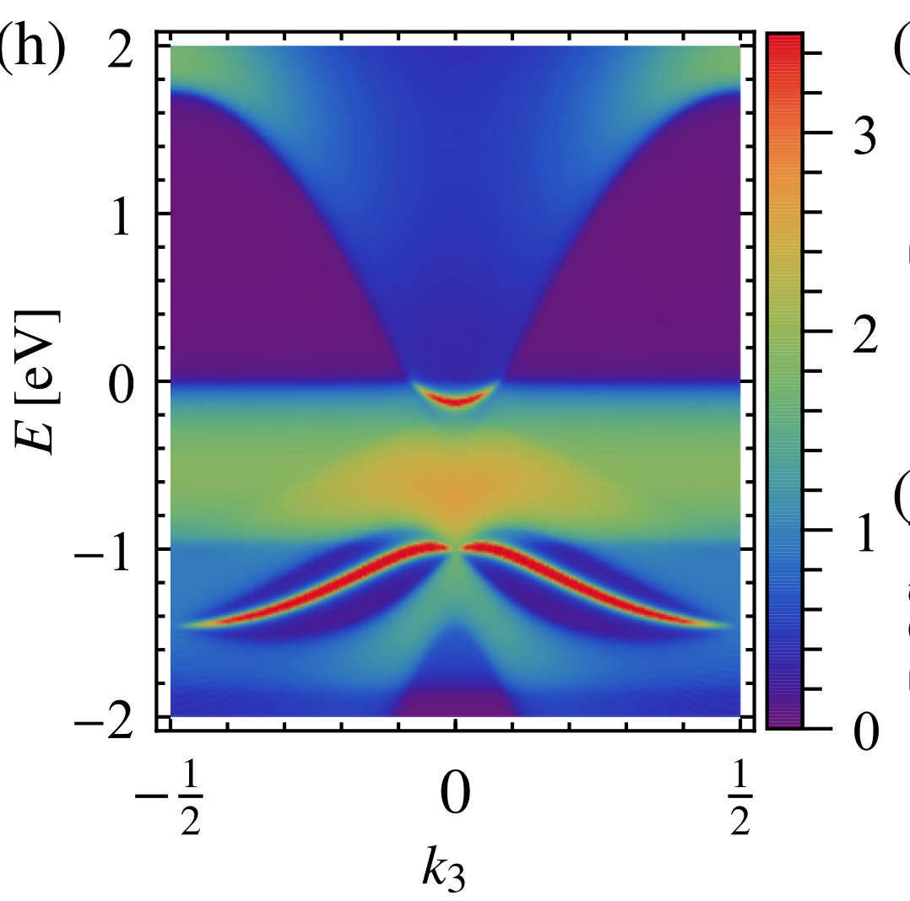
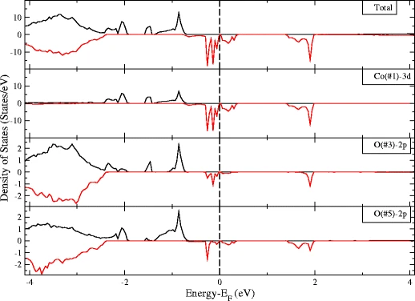

About Me.
I am a Ph.D. student of Stepan S. Tsirkin in Titus Neupert's Condensed Matter Theory group at the University of Zurich in Switzerland.
I am interested in the first-principle study of various crystals whose unique properties. Recently I have focused on simulating nonlinear transport phenomenons using Wannier interpolation and Berry-Boltzmann equations. We are developing WannierBerri, a code to calculate different properties utilizing Wannier interpolation: Berry curvature, orbital moment, and derived properties. Combined with simulations and experiments, I hope to understand more physics about nonlinear transports of natural materials.
Personal Information
- NameXiaoxiong Liu
- NationalityChina
- BirthdayFeb 1993
- Emailxxliu@physik.uzh.ch
Short CV.
Education
-
2019- -present
-
2016- -2019
Master in Theoretical Physics
LanZhou University, LanZhou, China
-
2012- -2016
Bachelor in Physics
LanZhou University, LanZhou, China
Teaching Assistant
-
Quantum Mechanics (2022)
-
Machine Learning for the Sciences (2022)
-
Mathematical Methods of Physics I (2021)
-
Linear Algebra II (2021)
-
Linear Algebra I (2020)
-
Scientific Computing (2020)
Language Skills
Chinese (native)
English (fluent)
Coding Skills
Python3
Mathmatica
Fortran
Linux
DFT software
VASP
QuantumEspresso
FPLO
ABINIT
Siesta
ASE
POST DFT
Wannier90
WannierBerri
WannierTools
irrep
Z2pack
Aiida
Projects.
WannierBerri
WannierBerri
wannier-berri.org
WannierBerri is a python code for Wannier interpolation and integration of quantities related to Berry curvature, magnetic moment ,and their derivatives. Various linear or nonlinear transport phenomena can be studied by using WannierBerri. With the help of mixed Fourier transform, recursive adaptive refinement, and tetrahedron method, WannierBerri can show us converged quantity with less computational time and fewer k-points. Both Wannier functions from DFT and theoretical TB model can be used by WannierBerri
| ----------Tested quantities---------- | ----------Testing quantities---------- |
|---|---|
| Ohmic conductivity | Linear magnetoresistance |
| Anomalous Hall conductivity | Quadratic magnetoresistance |
| Classic Hall conductivity | Nonlinear Hall conductivity |
| Nonlinear AHC | Electrical magnetochiral anistropy |
| Nonlinear Drude conductivity | Shift current |
| Spin Hall conductivity | |
| Optical conductivity |
Magnetic Structure construction based on Wannier functions
Magnetic Structure construction based on Wannier functions

Ferromagnetic and anti-ferromagnetic structures are famous magnetic structures. But the magnetic ground state of natural material is always worth discussing. More and more studies show that ferromagnetic materials are not colinear, meaning there are more refined magnetic structures beyond the apparent magnetic moment. E.g. Spiral ferromagnetic structures. The usefulness of the toy models is limited. And the convergence of magnetization in DFT is not very satisfactory especially using supercells. Wannier functions are an excellent tool for studying crystals. It can construct an atomic Hamiltonian from DFT. Once we have a nonmagnetic Wannier Hamiltonian H_nomag, by creating Hamiltonians H' only from magnetic interactions, magnetic Wannier Hamiltonians for various magnetic structures is H_mag = H_nomag + H'.
Publications.(part)
Universal higher-order bulk-boundary correspondence of triple nodal points
Universal higher-order bulk-boundary correspondence of triple nodal points

P. M. Lenggenhager, Xiaoxiong Liu, T. Neupert, T. Bzdušek
arXiv:2104.11254
Triple nodal points are degeneracies of energy bands in momentum space at which three Hamiltonian eigenstates coalesce at a single eigenenergy. For spinless particles, the stability of a triple nodal point requires two ingredients: rotation symmetry of order three, four or six; combined with mirror or space-time-inversion symmetry. However, despite ample studies of their classification, robust boundary signatures of triple nodal points have until now remained elusive. In this work, we first show that pairs of triple nodal points in semimetals and metals can be characterized by Stiefel-Whitney and Euler monopole invariants, of which the first one is known to facilitate higher-order topology. Motivated by this observation, we then combine symmetry indicators for corner charges and for the Stiefel-Whitney invariant in two dimensions with the classification of triple nodal points for spinless systems in three dimensions. The result is a complete higher-order bulk-boundary correspondence, where pairs of triple nodal points are characterized by fractional jumps of the hinge charge. We present minimal models of the various species of triple nodal points carrying higher-order topology, and illustrate the derived correspondence on ScAlC which becomes a higher-order triple-point metal in applied strain. The generalization to spinful systems, in particular to the WC-type triple-point material class, is briefly outlined.
Triple nodal points characterized by their nodal-line structure in all magnetic space groups
Triple nodal points characterized by their nodal-line structure in all magnetic space groups

P. M. Lenggenhager, Xiaoxiong Liu, T. Neupert, T. Bzdušek
arXiv:2201.08404
We analyze triply degenerate nodal points [or triple points (TPs) for short] in energy bands of crystalline solids. Specifically, we focus on spinless band structures, i.e., when spin-orbit coupling is negligible, and consider TPs formed along high-symmetry lines in the momentum space by a crossing of three bands transforming according to a 1D and a 2D irreducible corepresentation (ICR) of the little co-group. The result is a complete classification of such TPs in all magnetic space groups, including the non-symmorphic ones, according to several characteristics of the nodal-line structure at and near the TP. We show that the classification of the presently studied TPs is exhausted by 13 magnetic point groups (MPGs) that can arise as the little co-group of a high-symmetry line and which support both 1D and 2D spinless ICRs. For 10 of the identified MPGs, the TP characteristics are uniquely determined without further information; in contrast, for the 3 MPGs containing sixfold rotation symmetry, two types of TPs are possible, depending on the choice of the crossing ICRs. The classification result for each of the 13 MPGs is illustrated with first-principles calculations of a concrete material candidate.
Signatures of Weyl fermion annihilation in a correlated kagome magnet
Signatures of Weyl fermion annihilation in a correlated kagome magnet

I. Belopolski, T. A. Cochran, Xiaoxiong Liu, Z. Cheng, X. Yang, Z. Guguchia, S. S. Tsirkin, J. Yin, P. Vir, G. S. Thakur, S. Zhang, J. Zhang, K. Kaznatcheev, G. Cheng, G. Chang, D. Multer, N. Shumiya, M. Litskevich, E. Vescovo, T. K. Kim, C. Cacho, N. Yao, C. Felser, T. Neupert, M. Z. Hasan
PHYSICAL REVIEW LETTERS 127, 256403 (2021)
The manipulation of topological states in quantum matter is an essential pursuit of fundamental physics and next-generation quantum technology. Here we report the magnetic manipulation of Weyl fermions in the kagome spin-orbit semimetal Co 3 Sn 2 S 2, observed by high-resolution photoemission spectroscopy. We demonstrate the exchange collapse of spin-orbit-gapped ferromagnetic Weyl loops into paramagnetic Dirac loops under suppression of the magnetic order. We further observe that topological Fermi arcs disappear in the paramagnetic phase, suggesting the annihilation of exchange-split Weyl points. Our findings indicate that magnetic exchange collapse naturally drives Weyl fermion annihilation, opening new opportunities for engineering topology under correlated order parameters.
The manipulation of topological states in quantum matter is an essential pursuit of fundamental physics and next-generation quantum technology. Here we report the magnetic manipulation of Weyl fermions in the kagome spin-orbit semimetal Co 3 Sn 2 S 2, observed by high-resolution photoemission spectroscopy. We demonstrate the exchange collapse of spin-orbit-gapped ferromagnetic Weyl loops into paramagnetic Dirac loops under suppression of the magnetic order. We further observe that topological Fermi arcs disappear in the paramagnetic phase, suggesting the annihilation of exchange-split Weyl points. Our findings indicate that magnetic exchange collapse naturally drives Weyl fermion annihilation, opening new opportunities for engineering topology under correlated order parameters.
Unconventional chiral charge order in kagome superconductor KV3Sb5
Unconventional chiral charge order in kagome superconductor KV3Sb5

Y. Jiang, J. Yin, M. M. Denner, N. Shumiya, B. R. Ortiz, G. Xu, Z. Guguchia, J. He, M. S. Hossain, Xiaoxiong Liu, J. Ruff, L. Kautzsch, S. Zhang, G. Chang, I. Belopolski, Q. Zhang, T. A. Cochran, D. Multer, M. Litskevich, Z. Cheng, X. Yang, Z. Wang, R. Thomale, T. Neupert, S. D. Wilson, M. Z. Hasan
Nature Materials, volume 20, pages 1353–1357 (2021)
Intertwining quantum order and non-trivial topology is at the frontier of condensed matter physics. A charge-density-wave-like order with orbital currents has been proposed for achieving the quantum anomalous Hall effect in topological materials and for the hidden phase in cuprate high-temperature superconductors. However, the experimental realization of such an order is challenging. Here we use high-resolution scanning tunnelling microscopy to discover an unconventional chiral charge order in a kagome material, KV3Sb5, with both a topological band structure and a superconducting ground state. Through both topography and spectroscopic imaging, we observe a robust 2 × 2 superlattice. Spectroscopically, an energy gap opens at the Fermi level, across which the 2 × 2 charge modulation exhibits an intensity reversal in real space, signalling charge ordering. At the impurity-pinning-free region, the strength of intrinsic charge modulations further exhibits chiral anisotropy with unusual magnetic field response. Theoretical analysis of our experiments suggests a tantalizing unconventional chiral charge density wave in the frustrated kagome lattice, which can not only lead to a large anomalous Hall effect with orbital magnetism, but also be a precursor of unconventional superconductivity.
From triple-point materials to multiband nodal links
From triple-point materials to multiband nodal links

P. M. Lenggenhager, Xiaoxiong Liu, S. S. Tsirkin, T. Neupert, and T. Bzdušek
PHYSICAL REVIEW B 103, L121101 (2021)
We study a class of topological materials which in their momentum-space band structure exhibit threefold degeneracies known as triple points. Focusing specifically on PT-symmetric crystalline solids with negligible spin-orbit coupling, we find that such triple points can be stabilized by little groups containing a three-, four-, or sixfold rotation axis, and we develop a classification of all possible triple points as type A vs type B according to the absence vs presence of attached nodal-line arcs. Furthermore, by employing the recently discovered non-Abelian band topology, we argue that a rotation-symmetry-breaking strain transforms type-A triple points into multiband nodal links. Although multiband nodal-line compositions were previously theoretically conceived and related to topological monopole charges, a practical condensed-matter platform for their manipulation and inspection has hitherto been missing. By reviewing the known triple-point materials with weak spin-orbit coupling and by performing first-principles calculations to predict new ones, we identify suitable candidates for the realization of multiband nodal links in applied strain. In particular, we report that an ideal compound to study this phenomenon is Li2NaN, in which the conversion of triple points to multiband nodal links facilitates a largely tunable density of states and optical conductivity with doping and strain, respectively.
Magneto-Transport and Shubnikov–de Haas Oscillations in the Type–II Weyl Semimetal Candidate NbIrTe4 Flake
Magneto-Transport and Shubnikov–de Haas Oscillations in the Type–II Weyl Semimetal Candidate NbIrTe4 Flake

X. Huang, Xiaoxiong Liu, P. Yu, P. Li, J. Cui, J. Yi, J. Deng, J. Fan, Z. Ji, F. Qu, X. Jing, C. Yang, L Lu, Z. Liu, G. Liu
CHIN.PHYS.LETT. Vol.36,No.7(2019)077101
We report on magnetoresistance, Hall effect, and quantum Shubnikov–de Haas oscillation (SdH) experiments in NbIrTe4 single crystals, which was recently predicted to be a type-II Weyl semimetal. NbIrTe4 manifests a non-saturating and parabolic magnetoresistance at low temperatures. The magneto-transport measurements show that NbIrTe4 is a multiband system. The analysis of the SdH oscillations reveals four distinct oscillation frequencies. Combined with the density-functional theory calculations, we show that they come from two types of Fermi surfaces: electron pocket E1 and hole pocket H2.
A nonmagnetic topological Weyl semimetal in quaternary Heusler compound CrAlTiV
A nonmagnetic topological Weyl semimetal in quaternary Heusler compound CrAlTiV

Xiaoxiong Liu, L. Li, Y. Cui, J. Deng, X. Tao
Appl. Phys. Lett. 111, 122104 (2017)
We predict that the paramagnetic state of inversion-breaking quaternary Heusler alloy CrVTiAl is a Weyl semimetal candidate. There are 24 Weyl nodes (WN) appearing at the same energy in the first Brillouin zone without spin-orbit coupling (SOC). One WN splits into a pair of Weyl nodes (WN1 and WN2) of the same chirality when considering SOC because SOC removes the spin degeneracy. Clear surface state Fermi arc structures on the (111) surface are also obtained. The for- mation mechanism of the Weyl nodes is independent of point symmetries, i.e., the number and chi- rality of Weyl nodes are not affected when the point symmetries are broken slightly.
First-principle investigations of 3d transition metal (Fe, Cu, and Co)-doped rocksalt MgO by chain
First-principle investigations of 3d transition metal (Fe, Cu, and Co)-doped rocksalt MgO by chain

Xiaoxiong Liu, Q. Gao, L. Li, J. Zhao, X. Hu, J. Deng
J Supercond Nov Magn (2017) 30:1635–1641
A chain-doped method is designed which is to substitute 3d transition metal (Fe, Cu, and Co) for Mg of 2 × 2 × 2 rocksalt MgO supercell in [1 1 0] crystallographic direction. The electronic structures and magnetic properties of the three doped systems are investigated by first-principle calculations. The calculations reveal that both Fe- and Cu-doped single atomic chains RS MgO show 100 % spin polarization. They are half-metallic ferromagnets. In addition, Co-doped single atomic chain RS MgO shows a spin-gapless characteristic.